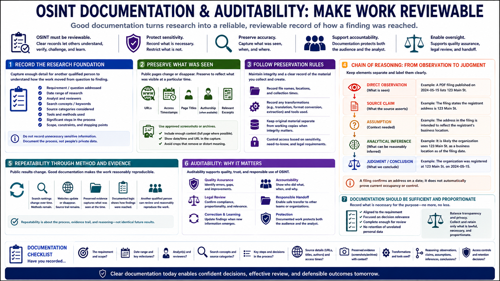

Documentation and Evidence Handling
Connecting to LMS... Progress: in progress

Narration
OSINT must be reviewable. Record the requirement, date, analyst, search concepts, source categories, and significant steps. Documentation should let another qualified person understand how the work moved from question to finding without exposing unnecessary sensitive details.
Preserve URLs, access timestamps, page titles, authorship where available, and relevant excerpts. Public pages can change or disappear. Approved screenshots or archives can preserve what was visible at a particular time, but they should include enough context to avoid turning a cropped image into a misleading artifact.
Follow organizational rules for evidence preservation. Record file names, collection times, and any transformations such as translation or format conversion. Keep original material separate from working copies when integrity matters, and restrict access according to sensitivity and legal requirements.
A chain of reasoning connects observations to judgments. Label direct observations, source claims, assumptions, and analytical inferences separately. For example, a filing may confirm an address on a date; it does not automatically prove current occupancy or control.
Repeatability does not mean every public result will remain identical. Search rankings and websites change. It means the method, source trail, preserved evidence, and decision logic are documented well enough for review and reasonable reproduction.
Auditability protects both the audience and the analyst. It supports quality assurance, correction, legal review, and responsible handoff. Documentation should be sufficient for the purpose but proportionate: do not retain unrelated personal data simply to make a case file look comprehensive.